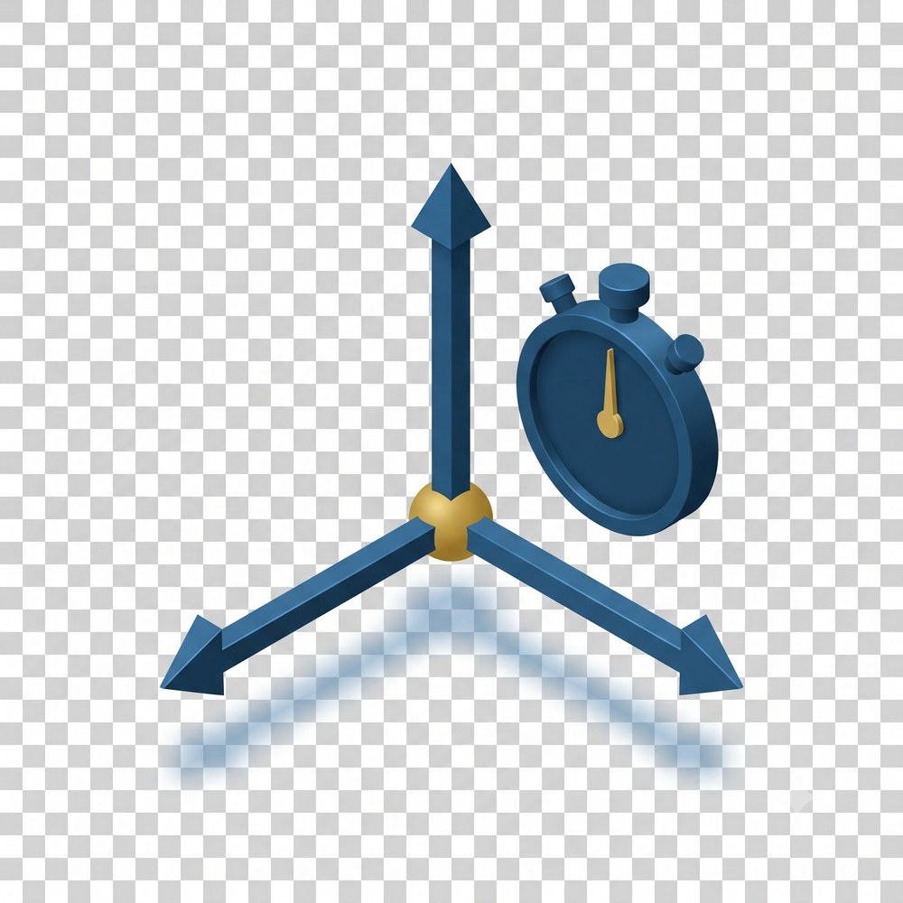
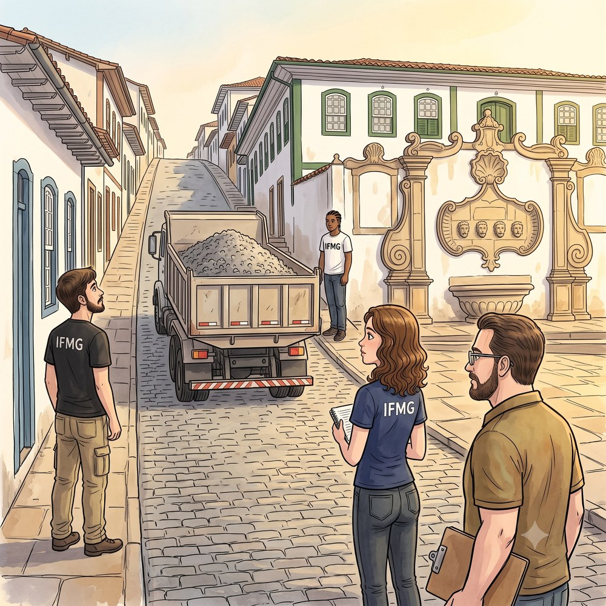
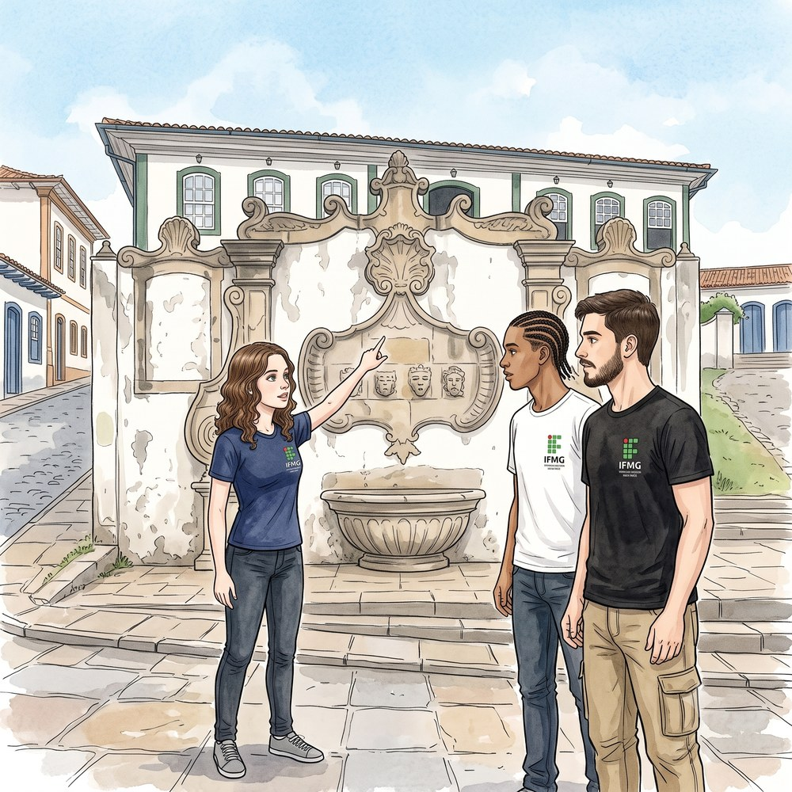
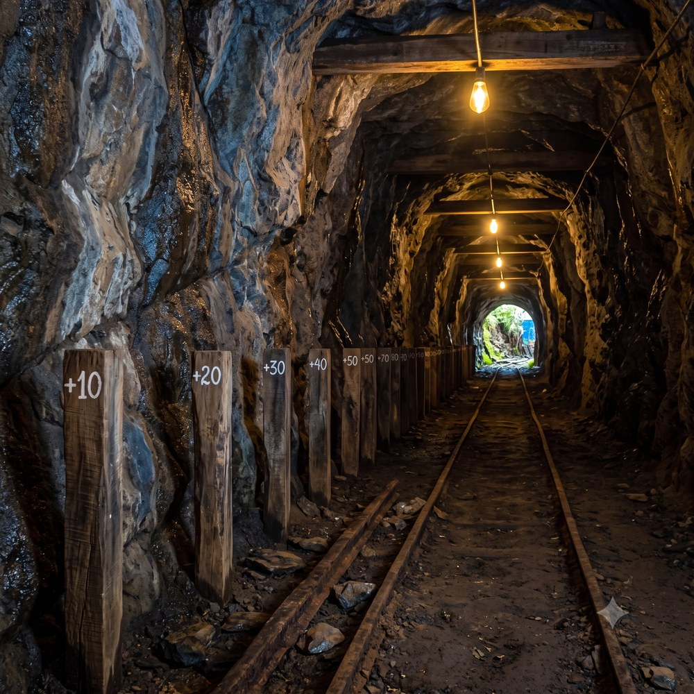
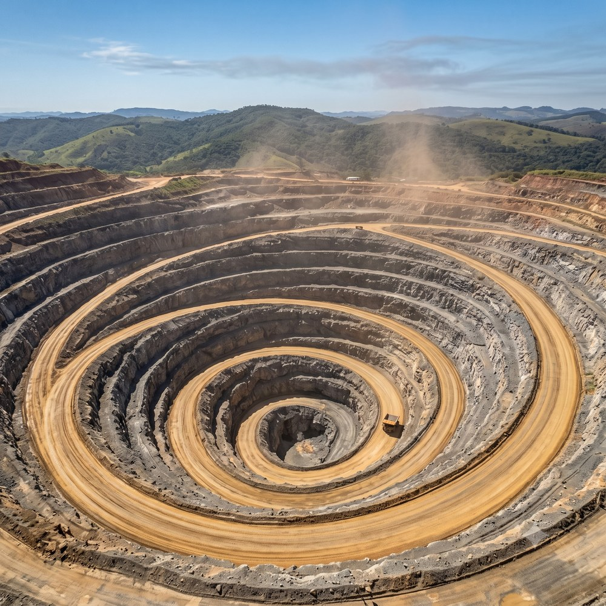
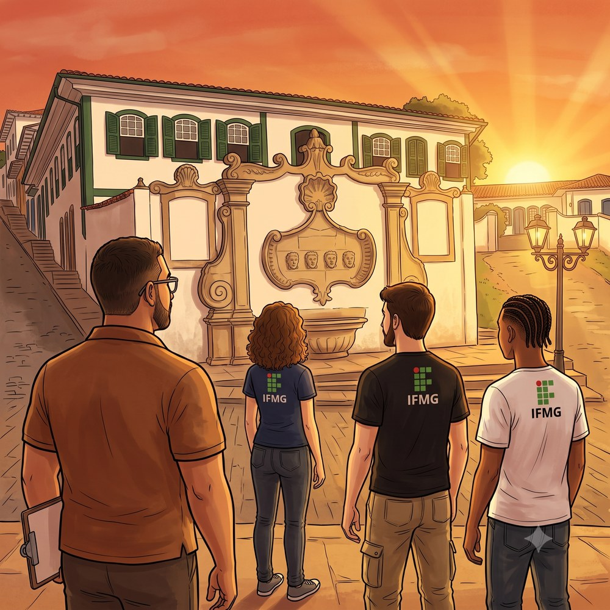
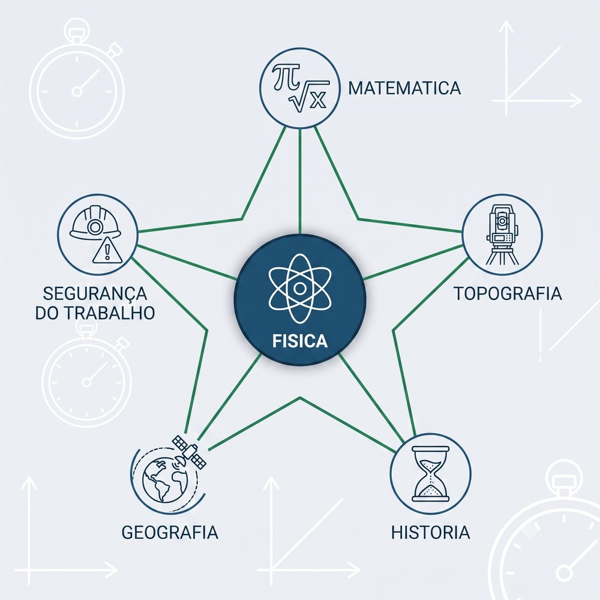
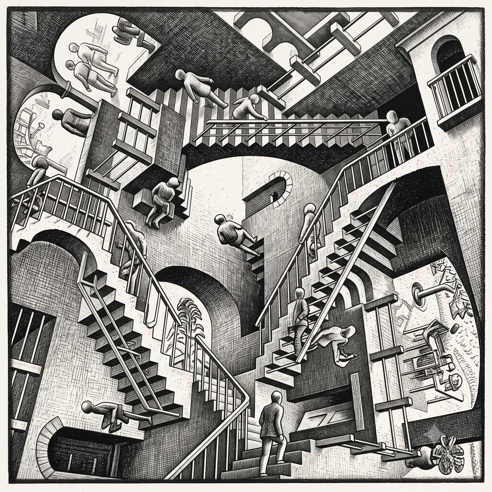

“O espaço absoluto, por sua própria natureza e sem relação com nada externo, permanece sempre semelhante e imóvel.”

O Largo Marília de Dirceu ainda estava coberto por aquela bruma fina que Ouro Preto guarda entre as montanhas nas madrugadas de inverno. O sol mal havia ultrapassado a linha da Serra do Itacolomi quando Sofia desceu os últimos degraus da Ladeira de Santa Efigênia e pisou o calçamento de quartzito do largo. O ar carregava cheiro de café torrado vindo de uma das casas coloniais, e o chafariz — o mesmo onde Maria Dorotéia, a Marília de Dirceu, ouvia a água cair há mais de dois séculos — pingava ritmado, como um metrônomo de pedra.

Pedro já estava ali, em pé na calçada esquerda da Rua Santa Efigênia, poucos metros acima do largo, com o caderno aberto nas mãos. Lucas tinha subido um pouco mais e esperava na calçada do outro lado da mesma rua, de olho na torre da igreja de Santa Efigênia, recortada lá no alto, onde a ladeira termina. Os três tinham combinado de se encontrar cedo para a atividade de campo do Prof. Felipe — algo sobre “observar a cidade como um físico”, dissera o professor na aula anterior, sem dar mais detalhes.
Foi quando o barulho chegou primeiro que a imagem. Um caminhão-basculante carregado de cascalho de granito cruzou o largo e engatou a subida da Rua Santa Efigênia, os pneus largos estalando sobre as pedras irregulares. O motorista reduziu a marcha logo no início da rampa, para vencer a ladeira sem arrancar nenhuma das pedras centenárias do calçamento. O cascalho na caçamba tremia a cada solavanco, e um fino pó cinza se desprendia no ar da manhã.
Sofia, parada na boca da rua, alinhada com o chafariz, olhou para o caminhão e anotou: “Está passando na minha frente agora — bem diante do chafariz.”
Pedro, da calçada de baixo, escreveu no caderno: “O caminhão acabou de passar por mim — já está uns dez metros à frente.”
Lucas, mais acima na ladeira, disse em voz alta: “Ele ainda está longe da igreja de Santa Efigênia, lá em cima.”
Os três descreviam o mesmo caminhão, no mesmo instante, na mesma rua — e nenhum dava a mesma posição.
Prof. Felipe apareceu na esquina da Rua Bernardo Vasconcelos, com a camisa polo em tom terroso e a prancheta debaixo do braço. Parou, ouviu os três relatos, e sorriu.
— Todos viram o mesmo caminhão. Nenhum deu a mesma posição. Quem está certo?
Silêncio.
— Todos estão — completou o professor. — Cada um de vocês escolheu, sem perceber, um ponto de referência diferente para descrever onde o caminhão estava. Sofia usou o chafariz. Pedro usou a si mesmo. Lucas usou a igreja lá no alto da ladeira. Três pontos de referência diferentes, três respostas diferentes — e nenhuma delas errada. Isso que vocês acabaram de fazer tem um nome na Física.
Sofia franziu a testa. “Para descrever onde alguma coisa está”, pensou, “não basta apontar — precisa dizer de onde se está apontando.”
Ela não sabia ainda, mas tinha acabado de formular, com palavras próprias, o conceito de referencial.

O Largo Marília de Dirceu é um dos recantos mais antigos de Ouro Preto, no bairro Antônio Dias. No lado esquerdo do chafariz há uma placa que conta a sua história:
“Construído em 1759, esse artístico chafariz tem peças decorativas e funcionais, atribuídas a Manuel Francisco Lisboa. Foi erigido no paredão do Solar dos Ferrão, hoje Clube XV de Novembro, onde residiu Maria Dorotéia Joaquina de Seixas, a musa do poeta inconfidente Tomás Antônio Gonzaga, que ficou conhecida como Marília de Dirceu.”
Repare no nome: Manuel Francisco Lisboa foi o pai de Aleijadinho. E a “Marília” da fonte é a mesma dos versos de Tomás Antônio Gonzaga, um dos inconfidentes. Nesse pequeno largo se cruzam a arte barroca, a poesia e a história do Brasil — e, agora, a Física.
Vale a pena ir até lá pessoalmente: sente-se na escadaria, ouça a água cair no mesmo ponto onde Marília a ouvia há mais de dois séculos e escolha — como Sofia, Pedro e Lucas — um ponto de referência para descrever o movimento da cidade. A Física está em cada esquina de Ouro Preto, esperando o seu olhar.
Antes de medir qualquer movimento, é preciso escolher de onde olhar. Numa mina, essa escolha aparece de forma concreta: a mesma correia transportadora pode estar “parada” ou “em movimento”, conforme quem a observa. A imagem a seguir mostra exatamente essa cena — o operador que caminha ao lado da correia carregada de minério, no mesmo ritmo que ela.
Na mineração colonial de Ouro Preto, os escravizados que trabalhavam nas galerias da Mina do Chico Rei — com até 2,5 km de extensão — precisavam descrever posições no escuro absoluto usando referências fixas: uma estaca cravada no chão, uma curva na rocha, o som da água de drenagem. Sem saber, praticavam o conceito de referencial — a escolha de um ponto fixo a partir do qual tudo o mais é descrito. Essa prática, anterior a qualquer formalismo, é tão antiga quanto a necessidade humana de se localizar.
Em Física, referencial é o corpo ou ponto que um observador adota como fixo para descrever o movimento dos demais corpos. Dizer que algo está “em repouso” ou “em movimento” só tem significado quando se especifica em relação a quê. Essa ideia — a relatividade do movimento — foi formalizada por Galileu Galilei no século XVII: não existe movimento absoluto; todo movimento é relativo a um referencial escolhido.
Na rotina de uma mina a céu aberto, o técnico em mineração lida com referenciais a todo momento. Uma correia transportadora carregada de minério está “parada” para o operador que caminha ao lado dela na mesma velocidade — mas está claramente “em movimento” para o supervisor que a observa da torre de controle. A NR-22 exige que o trabalhador identifique corretamente o estado de movimento de máquinas antes de intervir: confundir “parado em relação a mim” com “parado de verdade” pode custar uma vida.
Prof. Felipe pediu aos três estudantes que repetissem a experiência do largo, mas agora com consciência. Sofia ficou parada no calçamento; Pedro caminhou ao lado do caminhão, na mesma velocidade; Lucas observou de um ponto mais alto da ladeira.
— Para Sofia, o caminhão se move. Para Pedro, que caminha junto, o caminhão parece parado. Para Lucas, lá de cima, os dois — Pedro e o caminhão — se movem juntos — explicou o professor.
O estado de movimento depende de quem observa. Essa é a primeira lição da cinemática: antes de descrever qualquer movimento, é preciso declarar o referencial.
| Observador (referencial) | O caminhão está... | Pedro está... |
|---|---|---|
| Sofia (parada no calçamento) | Em movimento | Em movimento |
| Pedro (caminhando junto ao caminhão) | Em repouso | Em repouso (ele próprio) |
| Lucas (mais acima na ladeira) | Em movimento | Em movimento |
O quadro mostra que o mesmo objeto pode estar simultaneamente em repouso e em movimento — basta mudar o referencial. Não há contradição: há escolha consciente do ponto de vista.
Galileu percebeu que, dentro de um navio que se move em linha reta e velocidade constante, nenhum experimento mecânico permite distinguir se o navio está parado ou em movimento. As borboletas voam da mesma forma, a água escorre igual, a bola cai no mesmo ponto. Esse é o Princípio da Relatividade de Galileu: as leis da Física são as mesmas em qualquer referencial que se mova em linha reta com velocidade constante.
Para o estudante de Ouro Preto, a versão cotidiana é simples: dentro do ônibus que desce a ladeira suavemente, seu suco sobre a mesa não se move — até o motorista frear.
Se o estado de movimento depende do referencial, a posição de um corpo depende de uma origem. Nas galerias escuras da mineração colonial, essa origem ganhava forma em estacas de madeira cravadas ao longo do caminho. A imagem a seguir mostra essas estacas numeradas, rente à parede da galeria — as primeiras coordenadas da história.

As galerias da Mina do Chico Rei, no bairro Antônio Dias em Ouro Preto, usavam estacas de madeira fincadas no chão a intervalos regulares — tipicamente a cada braça (2,2 m) — como sistema de localização no escuro. Um minerador podia dizer “estou na quinta estaca depois da boca da galeria”, e qualquer colega saberia exatamente onde encontrá-lo. Essas estacas eram, na prática, coordenadas unidimensionais: uma origem (a boca da galeria), um sentido (para dentro) e posições marcadas por números.
Posição é a grandeza escalar que indica onde um corpo se encontra em relação a uma origem escolhida, ao longo de uma trajetória orientada. Em uma dimensão, a posição é um número com sinal: positivo se o corpo está no sentido adotado como positivo, negativo se está no sentido oposto. A posição não é distância — é localização com direção.
Na topografia de minas subterrâneas modernas, a origem é fixada na boca da galeria e o sentido positivo aponta para dentro. Posições são registradas em metros, com coordenadas unidimensionais ao longo do eixo da galeria. Um erro de apenas 5 m na determinação da posição de um sistema de drenagem pode resultar em inundação catastrófica — a NR-22 exige que toda posição subterrânea seja registrada com precisão mínima de 1 m.
Prof. Felipe levou os estudantes mentalmente para dentro da Mina do Chico Rei.
— Imaginem uma galeria retilínea. A boca da mina é a origem — a posição zero. Para dentro é o sentido positivo. Cada estaca marca uma posição.
Sofia desenhou no caderno uma reta horizontal. Marcou um ponto como “0” (boca da galeria), e depois marcou estacas a cada 10 m: +10, +20, +30...
— E se eu caminhar para fora da mina, passando da boca? — perguntou.
— Então sua posição será negativa — respondeu o professor. — Posição −5 m significa que você está 5 metros para fora da boca da galeria, no sentido oposto ao que escolhemos como positivo.
A posição é um número com sinal. O sinal não indica “bom” ou “ruim” — indica direção em relação à origem.
| Símbolo | Grandeza | Unidade SI |
|---|---|---|
| x | Posição | m (metro) |
Quando um corpo muda de posição, a diferença entre a posição final e a posição inicial tem nome: deslocamento. O deslocamento é uma grandeza com sinal — informa não apenas o quanto o corpo se moveu, mas em que sentido.
| Símbolo | Grandeza | Unidade SI |
|---|---|---|
| Δx | Deslocamento | m (metro) |
| xf | Posição final | m (metro) |
| xi | Posição inicial | m (metro) |
Sofia percebeu algo: o deslocamento pode ser positivo, negativo ou nulo — mas nunca é a mesma coisa que a distância percorrida. Se o minerador for até a estaca +40 e voltar para +10, o deslocamento total é zero (voltou ao ponto de partida), mas ele caminhou 60 m no total. Essa diferença será fundamental no Tópico 4.
Assim como a posição precisa de uma origem no espaço, o tempo precisa de um instante de partida. Em Ouro Preto, esse instante era anunciado pelos sinos das igrejas. A imagem a seguir mostra o sino nas torres da Igreja de Nossa Senhora da Conceição — cada badalada, um ponto exato e sem duração na linha do tempo.
Antes de relógios mecânicos se tornarem acessíveis no Brasil colônia, os moradores de Ouro Preto marcavam o tempo pelos sinos das igrejas. O sino da Matriz de Nossa Senhora do Pilar marcava as horas canônicas; o da Igreja de São Francisco de Assis, as missas. Cada badalada era um instante — um ponto no tempo, sem duração. O intervalo entre duas badaladas era mensurável: contava-se mentalmente, usava-se o próprio pulso, ou observava-se a sombra de um gnômon no adro da igreja. O tempo, como grandeza física, nasceu dessa necessidade de contar intervalos entre eventos.
Instante é um ponto específico na linha do tempo, representado pela letra t e medido em segundos (s) a partir de uma origem temporal escolhida — o “momento zero”. Intervalo de tempo é a duração entre dois instantes: a diferença Δt = tf − ti. A relação entre instante e intervalo de tempo é análoga à relação entre posição e deslocamento: o instante localiza no tempo assim como a posição localiza no espaço; o intervalo mede a duração assim como o deslocamento mede a mudança de posição.
Na mineração, intervalos de tempo são críticos para segurança. O tempo entre o sinal de alerta e a detonação de uma bancada é padronizado em 30 s — violá-lo é infração grave sob a NR-22. Cronômetros digitais são usados para medir o intervalo entre a ignição e a detonação de cada furo, garantindo que a sequência de retardos esteja correta. Um erro de 0,5 s pode significar a diferença entre uma detonação controlada e uma projeção de fragmentos.
Prof. Felipe sacou o celular e mostrou o cronômetro zerado.
— Quando eu apertar “iniciar”, esse será o nosso instante zero. Tudo que acontecer depois será medido a partir desse ponto.
Ele apertou. O cronômetro começou a correr.
— Agora, Sofia, bata palmas quando quiser.
Ela esperou alguns segundos e bateu palmas. O cronômetro marcava 4,7 s.
— O instante da sua palma é t = 4,7 s. Não é uma duração — é um ponto na linha do tempo, como uma estaca na galeria. É onde o evento aconteceu no tempo.
| Conceito | Analogia espacial | Símbolo | O que mede |
|---|---|---|---|
| Instante | Posição (x) | t | Onde no tempo um evento ocorre |
| Intervalo | Deslocamento (Δx) | Δt | Quanto tempo decorreu entre dois eventos |
Pedro bateu palmas em t1 = 4,7 s. Lucas bateu em t2 = 9,2 s. O intervalo entre as duas palmas é a diferença entre os dois instantes.
| Símbolo | Grandeza | Unidade SI |
|---|---|---|
| Δt | Intervalo de tempo | s (segundo) |
| tf | Instante final | s (segundo) |
| ti | Instante inicial | s (segundo) |
O intervalo de tempo é sempre positivo quando tf > ti — o tempo, diferente do espaço, só corre numa direção. Mas a analogia com o deslocamento é poderosa: assim como Δx = 0 significa “não mudou de lugar”, Δt = 0 significaria dois eventos simultâneos — acontecendo no mesmo instante.
A humanidade inventou três escalas para medir o tempo: calendários (dias, meses, anos — intervalos longos), relógios (horas, minutos, segundos — intervalos intermediários) e cronômetros (frações de segundo — intervalos curtos). Cada escala tem uma precisão diferente e serve a um contexto diferente.
Na mineração moderna, o GPS depende de relógios atômicos a bordo dos satélites, capazes de medir intervalos de tempo com precisão de nanossegundos (10−9 s). Sem essa precisão, o erro de posicionamento do GPS seria de dezenas de metros — inaceitável para a topografia de minas.
Nem todo caminho é uma linha reta. Numa mina a céu aberto, a estrada desce em espiral pelos níveis da cava, e o percurso é muito mais longo que a distância vertical entre o topo e o fundo. A imagem a seguir mostra essa rampa helicoidal vista do alto — a diferença entre trajetória e deslocamento desenhada na própria montanha.

As galerias da mineração colonial em Ouro Preto raramente eram retilíneas — seguiam os veios de ouro, que serpentavam pela rocha de forma imprevisível. Os mineradores desciam por rampas escavadas em espiral, acompanhando a inclinação natural do terreno. O caminho percorrido era sempre mais longo que a distância em linha reta entre a entrada e o ponto de lavra. Sem saber, aqueles mineradores viviam a diferença entre trajetória e deslocamento — um conceito que a Física só formalizaria séculos depois.
Trajetória é a curva descrita por um corpo durante seu movimento, vista a partir de um referencial específico. O comprimento da trajetória (ℓ) é a distância total percorrida ao longo da curva — é sempre positivo ou nulo. O deslocamento (Δx) é a diferença entre posição final e inicial — pode ser positivo, negativo ou nulo. As duas grandezas só coincidem em módulo quando o movimento é retilíneo e sem inversão de sentido.
Na mineração a céu aberto, rampas helicoidais conectam os diferentes níveis da cava. Um caminhão que desce do nível 0 ao nível −60 m percorre uma trajetória helicoidal de várias centenas de metros, mas seu deslocamento vertical é apenas 60 m. Correias transportadoras curvas seguem trajetórias que precisam ser medidas com precisão para calcular o comprimento da correia, o número de roletes e a tensão no acionamento.
Sofia desenhou dois caminhos no caderno: uma reta (galeria sem curvas) e uma espiral (rampa helicoidal).
— No primeiro caso — explicou Prof. Felipe —, a trajetória é retilínea: o corpo se move em linha reta. No segundo, é curvilínea: o caminho tem curvas. A trajetória depende do referencial: uma formiga caminhando na borda de uma roda descreve um círculo para quem observa de fora, mas uma reta para outra formiga parada na roda.
| Símbolo | Grandeza | Unidade SI |
|---|---|---|
| ℓ | Comprimento da trajetória (distância percorrida) | m (metro) |
| |Δx| | Módulo do deslocamento | m (metro) |
A igualdade só ocorre em uma condição especial.
| Símbolo | Grandeza | Unidade SI |
|---|---|---|
| ℓ | Comprimento da trajetória | m (metro) |
| |Δx| | Módulo do deslocamento | m (metro) |
| Grandeza | Sinal | Pode ser zero? | Depende do caminho? |
|---|---|---|---|
| Distância percorrida (ℓ) | Sempre ≥ 0 | Sim (corpo parado) | Sim — mede todo o caminho |
| Deslocamento (Δx) | Positivo, negativo ou zero | Sim (volta ao início) | Não — só depende de xi e xf |
Na mineração moderna, o tempo deixou de ser apenas uma grandeza a medir e virou um recurso a controlar. Numa sala de operações, cada segundo do ciclo de um caminhão é cronometrado, comparado e otimizado. A imagem a seguir mostra esse ambiente — o tempo transformado em minério e decisão.
Em 1761, o relojoeiro inglês John Harrison construiu o cronômetro marítimo H4, capaz de manter a hora com erro de apenas 5 segundos após 81 dias no mar. Essa precisão revolucionou a navegação: pela primeira vez, era possível determinar a longitude de um navio comparando a hora local com a hora de Greenwich. A conexão entre medir o tempo com precisão e localizar-se no espaço — o princípio que sustenta o GPS moderno — já estava ali, dois séculos antes dos satélites.
O segundo é a unidade SI de tempo. Desde 1967, é definido como a duração de 9.192.631.770 oscilações da radiação emitida pelo átomo de césio-133 na transição entre dois níveis hiperfinos do estado fundamental. Essa definição confere ao segundo uma precisão de 1 parte em 1015 — o equivalente a errar 1 segundo em 30 milhões de anos. Período (T) é o tempo de uma oscilação completa; frequência (f) é o número de oscilações por segundo. As duas grandezas são inversas: T = 1/f.
Na mineração moderna, o tempo é recurso e variável de controle. O tempo de ciclo de um caminhão fora de estrada — carga, transporte, descarga, retorno — determina a produtividade da operação. Um ciclo típico de 20 minutos significa 3 ciclos por hora por caminhão. A frota inteira é sincronizada por GPS, e atrasos de 2 minutos em um único caminhão propagam filas em toda a cadeia. A NR-22 também regula intervalos de descanso: 15 minutos a cada 90 minutos de exposição contínua a vibração de corpo inteiro — um intervalo de tempo que protege a saúde do trabalhador.
Prof. Felipe segurou um pêndulo improvisado — uma pedra amarrada a um barbante — e o soltou. O pêndulo oscilou de um lado para o outro.
— O tempo que a pedra leva para ir e voltar uma vez completa chama-se período — explicou. — Se eu contar quantas idas e voltas completas ela faz em um segundo, tenho a frequência.
| Símbolo | Grandeza | Unidade SI |
|---|---|---|
| T | Período | s (segundo) |
| f | Frequência | Hz (hertz = 1/s) |
A física da mineração lida com intervalos de tempo que vão de nanossegundos a anos. Os prefixos do SI organizam essa enormidade.
| Prefixo | Símbolo | Fator | Exemplo na mineração |
|---|---|---|---|
| milissegundo | ms | 10−3 s | Retardo entre detonações sequenciais (~25 ms) |
| microssegundo | μs | 10−6 s | Tempo de resposta de um sensor de vibração |
| nanossegundo | ns | 10−9 s | Precisão do relógio atômico de um satélite GPS |
O GPS determina posição comparando os instantes de chegada de sinais de pelo menos quatro satélites, cada um equipado com um relógio atômico. A velocidade da luz é constante, então a diferença de tempo entre os sinais permite calcular a distância a cada satélite — e, por triangulação, a posição do receptor.
Mas há um detalhe extraordinário: os relógios dos satélites GPS adiantam 38 microssegundos por dia em relação aos relógios na superfície, por efeito da relatividade geral de Einstein (a gravidade mais fraca na órbita faz o tempo correr mais rápido). Sem a correção relativística, o erro de posicionamento acumularia 11 km por dia — tornando o GPS inútil. O tempo, que parecia uma grandeza simples, revela-se entrelaçado com o próprio espaço.
O entardecer trouxe Sofia de volta ao Largo Marília de Dirceu, e com ela vieram Pedro, Lucas e o Prof. Felipe. A luz alaranjada do sol, agora descendo atrás da Serra de Ouro Preto, tingia o chafariz de tons quentes que a manhã não conhecera. O mesmo largo, o mesmo calçamento, o mesmo chafariz — mas, para Sofia, tudo parecia diferente. Não porque o lugar tivesse mudado, mas porque ela agora sabia nomeá-lo de outra forma.

Referencial: o ponto a partir do qual se observa. Posição: onde o corpo está, com sinal. Deslocamento: quanto mudou de posição. Instante: quando aconteceu. Intervalo de tempo: quanto durou. Trajetória: o caminho percorrido. Seis palavras — seis tijolos que, juntos, formam a primeira parede da cinemática.
Sofia olhou para o chafariz — aquele mesmo de onde descrevera a posição do caminhão pela manhã — e pensou que Maria Dorotéia, Marília de Dirceu, também observava dali o movimento dos tropeiros e carroças há mais de dois séculos. Os referenciais mudam, os observadores mudam, mas a Física é a mesma.
Na próxima aula, esses seis conceitos ganharão movimento: velocidade média, velocidade instantânea e o significado físico de uma reta no gráfico posição × tempo. A parede terá janelas.
Cinco problemas que conectam a Física com outras áreas do conhecimento técnico e científico. Cada problema exige análise, síntese ou avaliação — Bloom L4 a L6.

Quando a Física se encontra com outra disciplina, o caminho até a resposta segue oito etapas — sempre as mesmas. Esse protocolo chama-se Componente 5 e é o método que técnicos de mineração usam para resolver problemas reais. Pratique-o aqui: você vai reaplicá-lo integralmente no Trabalho (TR) desta trilha.
| Etapa | Nome | O que fazer |
|---|---|---|
| 1 | O que está sendo pedido? | Releia o enunciado. Escreva com suas próprias palavras o que é pedido. |
| 2 | Quais são os dados? | Liste cada grandeza com seu símbolo, valor e unidade. |
| 3 | Quais são as hipóteses? | Declare o que você vai assumir (trajetória retilínea, sem inversão etc.). |
| 4 | Qual é o desenho do problema? | Faça um esboço, diagrama ou esquema simples da situação. |
| 5 | Quais são as equações? | Identifique a equação do TT. Isole algebricamente a variável pedida. |
| 6 | Cálculo com unidades | Substitua os valores. Acompanhe as unidades passo a passo até o resultado. |
| 7 | Análise de resultados | O resultado faz sentido? Compare com valores típicos da mineração. |
| 8 | Responda o que foi pedido | Escreva a resposta completa, com unidade e interpretação no contexto. |
Uma galeria retilínea de uma mina subterrânea em Mariana tem 350 m de extensão. A boca da galeria é a origem (x = 0) e o sentido positivo aponta para dentro. Um topógrafo está na posição xi = +80 m e caminha até a posição xf = +260 m para instalar um sensor de ventilação. Determine o deslocamento do topógrafo e compare com a distância percorrida.
No século XVIII, um minerador na Mina do Chico Rei partia da boca da galeria (x = 0) às 6h00 (t1 = 0), alcançava o veio de ouro na posição x = +200 m às 6h40 (t2), e retornava à boca às 7h30 (t3). Determine: (a) o intervalo de tempo da ida, (b) o intervalo total do ciclo, (c) o deslocamento total e (d) a distância total percorrida.
Uma correia transportadora segue uma trajetória curvilínea entre o britador primário (posição A) e o pátio de estocagem (posição B), percorrendo ℓ = 1.200 m ao longo da curva. A distância em linha reta entre A e B é de 850 m. Um técnico precisa decidir se usará a Equação 5 (ℓ = |Δx|) para estimar o comprimento da correia. Avalie: a equação é válida neste caso? Justifique usando a relação entre ℓ e |Δx|.
A NR-22 estabelece que trabalhadores expostos a vibração de corpo inteiro devem ter 15 minutos de descanso a cada 90 minutos de exposição contínua. Um operador de caminhão fora de estrada começa seu turno às 7h00. Em que instantes ele deve iniciar os intervalos de descanso nas primeiras 4 horas de turno? Represente os instantes e intervalos numa linha do tempo.
O sistema GPS determina posição comparando instantes de chegada de sinais de 4 satélites. Cada satélite transmite um sinal que viaja à velocidade da luz (c = 3,0 × 108 m/s). Se o sinal de um satélite leva 0,068 s para chegar ao receptor de um topógrafo na Serra de Ouro Preto, determine a distância entre o satélite e o receptor. Expresse o resultado em km.
Em Relatividade, Escher desenhou um mundo onde três campos gravitacionais coexistem: escadarias que sobem para um observador descem para outro; o chão de um personagem é o teto de seu vizinho. Ninguém está errado — cada um vive em seu próprio referencial, e as leis da física funcionam perfeitamente dentro de cada um deles. A litogravura é, talvez sem que o artista pretendesse, a ilustração mais elegante do conceito que Sofia descobriu no Largo Marília de Dirceu: a posição, o movimento e até a direção de “cima” dependem de onde você está e de como escolhe olhar.
Escher nunca estudou física formalmente, mas sua obsessão por simetria e perspectiva o levou ao mesmo território que Galileu e Newton exploraram com equações: a realidade não tem um ponto de vista privilegiado.

“O que é, afinal, o tempo? Se ninguém me pergunta, eu sei; se me perguntam e quero explicar, não sei.”
BONJORNO, J. R. Identidade Saraiva: Física. São Paulo: Saraiva, 2024.
MÁXIMO, A. et al. Física: contexto & aplicações. São Paulo: Scipione, 2013.
TALAVEIRA, A. C. et al. Física: ensino médio, v. único. São Paulo: Nova Geração, 2005.
BLOOM, Benjamin S. (org.). O desenvolvimento de talentos na juventude. Porto Alegre: Globo, 1988.
HEWITT, Paul G. Física conceitual. 12. ed. Porto Alegre: Bookman, 2015.
NICOLELIS, Miguel. O verdadeiro criador de tudo: como o cérebro humano esculpiu o universo que conhecemos. São Paulo: Planeta, 2020.
PIAZZI, Pierluigi. Aprendendo inteligência: manual de instruções do cérebro para estudantes em geral. São Paulo: Aleph, 2008.
PIAZZI, Pierluigi. Inteligência em concursos: manual de instruções do cérebro para concurseiros e universitários. São Paulo: Aleph, 2013.
Estas Trilhas de Aprendizagem são concebidas, dirigidas e revisadas por uma equipe humana — autor, coautor, colaboradores, monitores e a equipe do Núcleo de Inovação e Desenvolvimento de Experimentos Científicos (NIDEC) e equipe da Coordenadoria da Área de Física (CODAFIS).
A inteligência artificial entra no processo como ferramenta, nunca como autora: é usada sob curadoria humana, com princípios claros, diretrizes pedagógicas explícitas e honestidade intelectual.
Assim, declaramos abertamente o uso de IA como assistente de redação e diagramação de todos os Objetos de Aprendizagem (Claude Opus 4.8 e Claude Cowork, Anthropic, 2026; Gemini Notebook, Google, 2026), do mesmo modo que se declara o uso de qualquer ferramenta de autoria.